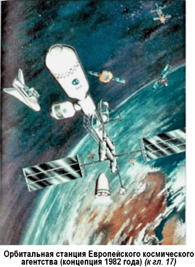
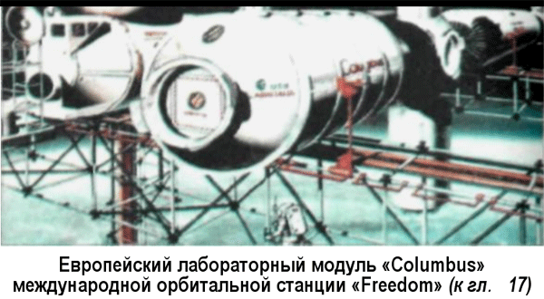
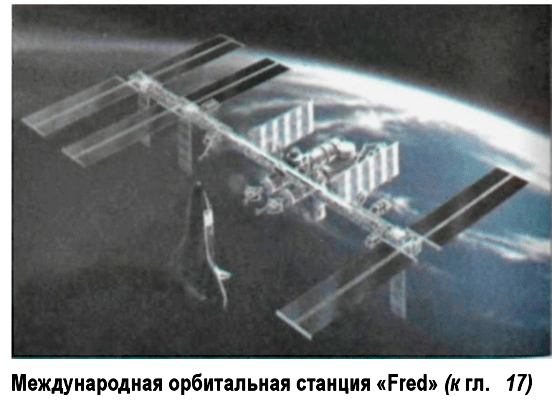

Астроинженерные сооружения
Проект О'Нейла нашел свое место в ряду других впечатляющих задумок на будущее.
На сегодняшний день известны четыре проекта крупномасштабных космических поселений, называемых также «астроинженерными сооружениями». Среди них — Кольца и Сфера Циолковского. Они состоят из огромного числа точечных поселений-спутников, которые в первом случае (кольца) вращаются вокруг звезды по замкнутым круговым орбитам, «нанизанные» на них, словно бусинки, во втором же — каждый по собственной, не пересекающейся с другими траектории.
Физик из Принстонской группы Ф. Дайсон предположил, что высокоразвитая цивилизация пожелает употребить вещество одной из планет своей системы на то, чтобы окружить свою звезду оболочкой и более полно использовать ее энергию. В этом случае цивилизация может остаться малочисленной и ограничиться своей родной планетой, но в ее распоряжении окажется колоссальное количество энергии, сосредоточенной в так называемой «Сфере Дайсона».
Следующим проектом является «Раковина Покровского», составленная из нескольких сплошных колец Циолковского.
Плоскости вращения колец устанавливают так, чтобы вместе они перехватывали практически все излучение звезды.
Впрочем, в полноценном космическом поселении необходимо соблюдать еще одно условие. В каждом из его жилых уровней должна быть одинаковая сила тяжести и направленная по нормали к пограничной поверхности уровня.
Поскольку поселения находятся в поле притяжения звезды (а чтобы не упасть на нее — вращаются), то они должны строиться по эквипотенциальным поверхностям гравитационноцентробежного поля. Между прочим, в наших домах на Земле полы тоже настилаются по эквипотенциальным поверхностям, а стены возводятся по перпендикулярным к ним силовым линиям гравитационного поля.
Основываясь на этом соображении, инженер Георгий Поляков из Астрахани разработал еще ряд вариантов астроинженерных сооружений. Эквипотенциальное космическое поселение «Кольцо» похоже на кольцо Циолковского, только немного «продавленное» у экватора. Чтобы перехватить все излучение звезды, на кольцо можно надеть две «шапки», оконтуренные силовыми линиями гравитационно-центробежного поля. По ассоциации назовем такое поселение «Фонариком». В оболочке «Фонарика» могут быть отверстия. В этом случае он вполне оправдает свое название — станет как бы вращающимся маяком, по его свету начнут сверять курс космические корабли.
На размеры эквипотенциальных поселений существенные ограничения накладывают законы сопромата. Даже в том случае, если поселение будет сделано из очень прочного на разрыв материала — алмаза, центробежное ускорение, равное земной силе тяжести, выдержит кольцо радиусом не более 928 километров. Ясно, что звезду таким поселением не окружить. Впрочем, центробежное ускорение можно выбрать и намного меньшим. Тогда и предельный радиус кольца увеличится.
Тем не менее для крупных звезд подобный вид космического поселения, судя по всему, неприемлем. «Кольца» и «Фонарики» могут размещаться только вокруг звезд небольших размеров — красных карликов.
Разумеется, все эти проекты выглядят более чем фантастично.
Гораздо более вероятно, что человечество будет строить космические поселения не вокруг звезд, а возле планет выбранной звездной системы. Попробуем представить, как они могут выглядеть.
Космическое поселение «Снежинка» состоит из большого числа городов-спутников, связанных радиальными транспортными магистралями (которые могут достигать поверхности планеты). «Карусель», наоборот, собрана из городов-спутников, соединенных кольцевыми магистралями. В структуре космического поселения «Ожерелье» имеются и радиальные, и кольцевые связки. Первым этапом создания подобной системы спутников станет «Маятник» — орбитальная станция, которая находится на стационарной орбите и связана с космическим телом (планетой или астероидом) своеобразной лифтовой трубой.
Несомненно, любопытна и «Груша» (ее можно было бы назвать также «Матрешкой»). Она повторяет эквипотенциальную поверхность системы двух астероидов.
Идея астроинженерных сооружений приводит нас к логическому выводу: если где-то существует цивилизация, намного опередившая земную, следовательно, она строит астроинженерные сооружения, которые можно было бы обнаружить обычными методами по определенным признакам.
Например, космические поселения типа «сферы Дайсона» — по мощному инфракрасному излучению от их оболочек.
Если космические поселения или какие-либо коллекторы излучения улавливают энергию звезды и таким образом поддерживают температуру своей среды обитания выше абсолютного нуля, скажем на уровне 300°К, характерном для поверхности Земли, то они должны испускать инфракрасное излучение.
Итак, мы вполне можем надеяться зарегистрировать такие цивилизации по инфракрасному излучению их космических поселений. Однако имеется серьезная трудность. Даже беглый обзор инфракрасного излучения неба позволяет без труда выявить несколько инфракрасных источников с температурой около 300°К. При анализе очень быстро выяснилось, что почти все эти источники лежат в областях современного звездообразования. Это оказались формирующиеся звезды, окутанные газопылевым коконом. Как и сфера Дайсона, пылевая оболочка кокона нагревается лучами центрального светила и становится инфракрасным источником с комнатной температурой.
Тем не менее ученые не теряют надежды. Несколько лет назад был запущен американский спутник «IRAS», работавший в инфракрасном диапазоне. Он обнаружил около двухсот тысяч совершенно неизвестных к тому времени инфракрасных объектов.
Специалисты Российского астрокосмического центра (М. Ю. Тимофеев, Н. С. Кардашев и В. Г. Промыслов) проанализировала так называемый «IRAS-каталог» с целью отобрать из него объекты, которые можно было бы интерпретировать как гигантские космические поселения.
А буквально на днях поступило сообщение: Лаборатория реактивного движения Калифорнийского университета США получила контракт на создание прибора, способного взглянуть на ранние этапы развития Вселенной. Хотя специалисты НАСА предпочитают пока не сообщать подробностей, этот прибор под названием «МИИ» («МII» — сокращение от «Mid-Infrared Instrument») можно быть использовать и для поиска «сфер Дайсона». «МИИ» будет принимать излучение в средней части инфракрасного диапазона. Поиски внеземных цивилизаций продолжаются…


